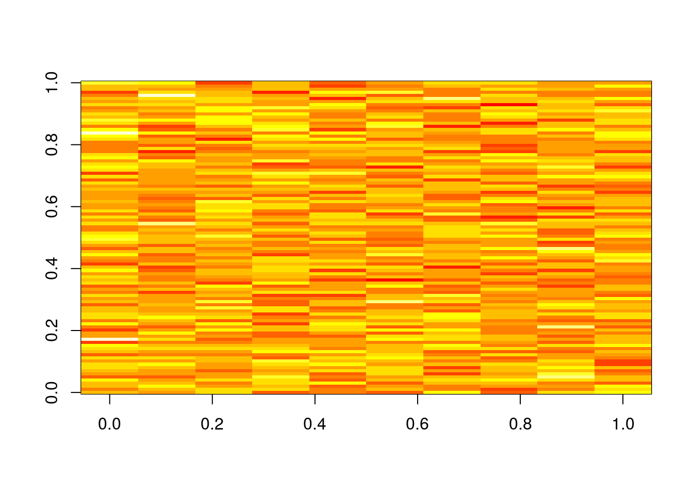
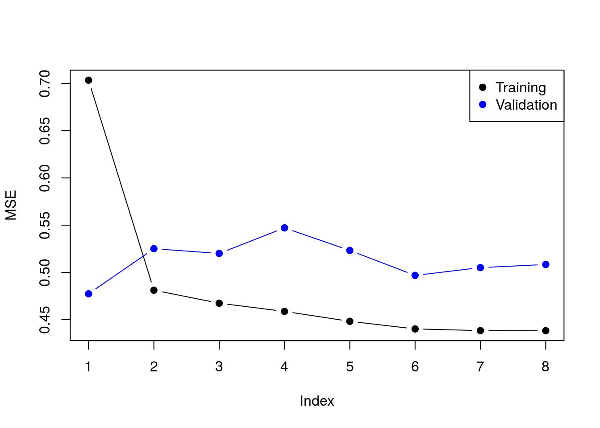
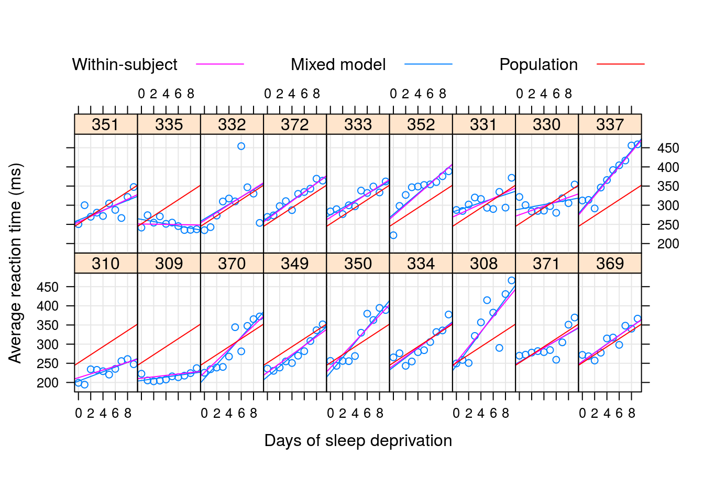

Chapter 8 Multivariate Data Analysis
The term “multivariate data analysis” is so broad and so overloaded, that we start by clarifying what is discussed and what is not discussed in this chapter. Broadly speaking, we will discuss statistical inference, and leave more “exploratory flavored” matters like clustering, and visualization, to the Unsupervised Learning Chapter 10.
More formally, let \(y\) be a \(p\) variate random vector, with \(E[y]=\mu\). Here is the set of problems we will discuss, in order of their statistical difficulty.
- Signal detection: a.k.a. multivariate hypothesis testing, i.e., testing if \(\mu\) equals \(\mu_0\) and for \(\mu_0=0\) in particular.
- Signal counting: Counting the number of elements in \(\mu\) that differ from \(\mu_0\), and for \(\mu_0=0\) in particular.
- Signal identification: a.k.a. multiple testing, i.e., testing which of the elements in \(\mu\) differ from \(\mu_0\) and for \(\mu_0=0\) in particular.
- Signal estimation: a.k.a. selective inference, i.e., estimating the magnitudes of the departure of \(\mu\) from \(\mu_0\), and for \(\mu_0=0\) in particular.
- Multivariate Regression: a.k.a. MANOVA in statistical literature, and structured learning in the machine learning literature.
- Graphical Models: Learning graphical models deals with the fitting/learning the multivariate distribution of \(y\). In particular, it deals with the identification of independencies between elements of \(y\).
Example 8.1 Consider the problem of a patient monitored in the intensive care unit. At every minute the monitor takes \(p\) physiological measurements: blood pressure, body temperature, etc. The total number of minutes in our data is \(n\), so that in total, we have \(n \times p\) measurements, arranged in a matrix. We also know the typical measurements for this patient when healthy: \(\mu_0\).
Signal detection means testing if the patient’s measurement depart in any way from his healthy state, \(\mu_0\). Signal counting means measuring how many measurement depart from the healthy state. Signal identification means pin-pointing which of the physiological measurements depart from his healthy state. Signal estimation means estimating the magnitude of the departure from the healthy state. Multivaraite regression means finding the factors which many explain the departure from the healthy state. Fitting a distribution means finding the joint distribution of the physiological measurements, and in particular, their dependencies and independenceis.8.1 Signal Detection
Signal detection deals with the detection of the departure of \(\mu\) from some \(\mu_0\), and especially, \(\mu_0=0\). This problem can be thought of as the multivariate counterpart of the univariate hypothesis test. Indeed, the most fundamental approach is a mere generalization of the t-test, known as Hotelling’s \(T^2\) test.
Recall the univariate t-statistic of a data vector \(x\) of length \(n\): \[\begin{align} t^2(x):= \frac{(\bar{x}-\mu_0)^2}{Var[\bar{x}]}= (\bar{x}-\mu_0)Var[\bar{x}]^{-1}(\bar{x}-\mu_0), \tag{8.1} \end{align}\]where \(Var[\bar{x}]=S^2(x)/n\), and \(S^2(x)\) is the unbiased variance estimator \(S^2(x):=(n-1)^{-1}\sum (x_i-\bar x)^2\).
Generalizing Eq(8.1) to the multivariate case: \(\mu_0\) is a \(p\)-vector, \(\bar x\) is a \(p\)-vector, and \(Var[\bar x]\) is a \(p \times p\) matrix of the covariance between the \(p\) coordinated of \(\bar x\). When operating with vectors, the squaring becomes a quadratic form, and the division becomes a matrix inverse. We thus have \[\begin{align} T^2(x):= (\bar{x}-\mu_0)' Var[\bar{x}]^{-1} (\bar{x}-\mu_0), \tag{8.2} \end{align}\] which is the definition of Hotelling’s \(T^2\) test statistic. We typically denote the covariance between coordinates in \(x\) with \(\hat \Sigma(x)\), so that \(\widehat \Sigma_{k,l}:=\widehat {Cov}[x_k,x_l]=(n-1)^{-1} \sum (x_{k,i}-\bar x_k)(x_{l,i}-\bar x_l)\). Using the \(\Sigma\) notation, Eq.(8.2) becomes \[\begin{align} T^2(x):= n (\bar{x}-\mu_0)' \hat \Sigma(x)^{-1} (\bar{x}-\mu_0), \end{align}\]which is the standard notation of Hotelling’s test statistic.
To discuss the distribution of Hotelling’s test statistic we need to introduce some vocabulary17:
- Low Dimension: We call a problem low dimensional if \(n \gg p\), i.e. \(p/n \approx 0\). This means there are many observations per estimated parameter.
- High Dimension: We call a problem high dimensional if \(p/n \to c\), where \(c\in (0,1)\). This means there are more observations than parameters, but not many.
- Very High Dimension: We call a problem very high dimensional if \(p/n \to c\), where \(1<c<\infty\). This means there are less observations than parameter.
- Extremely high dimensional: We call a problem extremely high dimensional if \(p/n \to \infty\). This means there are many more parameters than observations.
Hotelling’s \(T^2\) test can only be used in the low dimensional regime. For some intuition on this statement, think of taking \(n=20\) measurements of \(p=100\) physiological variables. We seemingly have \(20\) observations, but there are \(100\) unknown quantities in \(\mu\). Would you trust your conclusion that \(\bar x\) is different than \(\mu_0\) based on merely \(20\) observations.
Put formally: We cannot compute Hotelling’s test when \(n<p\) because \(\hat \Sigma\) is simply not invertible– this is an algebraic problem. We cannot compute Hotelling’s test when \(p/n \to c > 0\) because the signal-to-noise is very low– this is a statistical problem.
Only in the low dimensional case can we compute and trust Hotelling’s test. When \(n \gg p\) then \(T^2(x)\) is roughly \(\chi^2\) distributed with \(p\) degrees of freedom. The F distribution may also be found in the literature in this context, and will appear if assuming the \(n\) \(p\)-vectors are independent, and \(p\)-variate Gaussian. This F distribution is non-robust the underlying assumptions, so from a practical point of view, I would not trust the Hotelling test unless \(n \gg p\).
8.1.1 Signal Detection with R
Let’s generate some data with no signal.
library(mvtnorm)
n <- 1e2
p <- 1e1
mu <- rep(0,p) # no signal
x <- rmvnorm(n = n, mean = mu)
dim(x)## [1] 100 10image(x)
Now make our own Hotelling function.
hotellingOneSample <- function(x, mu0=rep(0,ncol(x))){
n <- nrow(x)
p <- ncol(x)
stopifnot(n > 5* p)
bar.x <- colMeans(x)
Sigma <- var(x)
Sigma.inv <- solve(Sigma)
T2 <- n * (bar.x-mu0) %*% Sigma.inv %*% (bar.x-mu0)
p.value <- pchisq(q = T2, df = p, lower.tail = FALSE)
return(list(statistic=T2, pvalue=p.value))
}
hotellingOneSample(x)## $statistic
## [,1]
## [1,] 11.62034
##
## $pvalue
## [,1]
## [1,] 0.3112691Things to note:
stopifnot(n > 5 * p)is a little verification to check that the problem is indeed low dimensional. Otherwise, the \(\chi^2\) approximation cannot be trusted.
solvereturns a matrix inverse.%*%is the matrix product operator (see alsocrossprod()).- A function may return only a single object, so we wrap the statistic and its p-value in a
listobject.
Just for verification, we compare our home made Hotelling’s test, to the implementation in the rrcov package. The results look good!
rrcov::T2.test(x)##
## One-sample Hotelling test
##
## data: x
## T2 = 11.6200, F = 1.0564, df1 = 10, df2 = 90, p-value = 0.4041
## alternative hypothesis: true mean vector is not equal to (0, 0, 0, 0, 0, 0, 0, 0, 0, 0)'
##
## sample estimates:
## [,1] [,2] [,3] [,4] [,5]
## mean x-vector 0.005833426 -0.07827891 -0.2037361 -0.04510206 0.05225777
## [,6] [,7] [,8] [,9] [,10]
## mean x-vector 0.1917247 -0.1753363 -0.03269077 -0.01459064 -0.063075488.2 Signal Counting
There are many ways to approach the signal counting problem. For the purposes of this book, however, we will not discuss them directly, and solve the signal counting problem as a signal identification problem: if we know where \(\mu\) departs from \(\mu_0\), we only need to count coordinates to solve the signal counting problem.
8.3 Signal Identification
The problem of signal identification is also known as selective testing, or more commonly as multiple testing.
In the ANOVA literature, an identification stage will typically follow a detection stage. These are known as the omnibus F test, and post-hoc tests, respectively. In the multiple testing literature there will typically be no preliminary detection stage. It is typically assumed that signal is present, and the only question is “where?”
The first question when approaching a multiple testing problem is “what is an error”? Is an error declaring a coordinate in \(\mu\) to be different than \(\mu_0\) when it is actually not? Is an error the proportion of such false declarations. The former is known as the family wise error rate (FWER), and the latter as the false discovery rate (FDR).
8.3.1 Signal Identification in R
One (of many) ways to do signal identification involves the stats::p.adjust function. [TODO: clarify why use p.adjust?] The function takes as inputs a \(p\)-vector of p-values. This implies that: (i) you are assumed to be able to compute the p-value of each the \(p\) hypothesis tested; one hypothesis for every coordinate in \(\mu\). (ii) unlike the Hotelling test, we do not try to estimate the covariance between coordinates. Not because it is not important, but rather, because the methods we will use apply to a wide variety of covariances, so the covariance does not need to be estimated.
We start be generating some multivariate data and computing the coordinate-wise (i.e. hypothesis-wise) p-value.
library(mvtnorm)
n <- 1e1
p <- 1e2
mu <- rep(0,p)
x <- rmvnorm(n = n, mean = mu)
dim(x)## [1] 10 100image(x)
We now compute the pvalues of each coordinate. We use a coordinate-wise t-test. Why a t-test? Because for the purpose of demonstration we want a simple test. In reality, you may use any test that returns valid p-values.
p.values <- apply(X = x, MARGIN = 2, FUN = function(y) t.test(y)$p.value)
plot(p.values, type='h')
Things to note:
- We used the
applyfunction to apply the same function to each column ofx. - The output,
p.values, is a vector of 100 p-values.
We are now ready to do the identification, i.e., find which coordinate of \(\mu\) is different than \(\mu_0=0\). The workflow is: (i) Compute an adjusted p-value. (ii) Compare the adjusted p-value to the desired error level.
If we want \(FWER \leq 0.05\), meaning that we allow a \(5\%\) probability of making any mistake, we will use the method="holm" argument of p.adjust.
alpha <- 0.05
p.values.holm <- p.adjust(p.values, method = 'holm' )
table(p.values.holm < alpha)##
## FALSE
## 100If we want \(FDR \leq 0.05\), meaning that we allow the proportion of false discoveries to be no larger than \(5\%\), we use the method="BH" argument of p.adjust.
alpha <- 0.05
p.values.BH <- p.adjust(p.values, method = 'BH' )
table(p.values.BH < alpha)##
## FALSE
## 100We now inject some signal in \(\mu\) just to see that the process works. We will artificially inject signal in the first 10 coordinates.
mu[1:10] <- 2 # inject signal
x <- rmvnorm(n = n, mean = mu) # generate data
p.values <- apply(X = x, MARGIN = 2, FUN = function(y) t.test(y)$p.value)
p.values.BH <- p.adjust(p.values, method = 'BH' )
which(p.values.BH < alpha)## [1] 1 2 3 4 5 6 7 8 9 10 46 53Indeed- we are now able to detect that the first coordinates carry signal, because their respective coordinate-wise null hypotheses have been rejected.
8.4 Signal Estimation
The estimation of the elements of \(\mu\) is a seemingly straightforward task. This is not the case, however, if we estimate only the elements that were selected because they were significant (or any other data-dependent criterion). Clearly, estimating only significant entries will introduce a bias in the estimation. In the statistical literature, this is known as selection bias. Selection bias also occurs when you perform inference on regression coefficients after some model selection, say, with a lasso, or a forward search18.
Selective inference is a complicated and active research topic so we will not offer any off-the-shelf solution to the matter. The curious reader is invited to read J. D. Rosenblatt and Benjamini (2014), Javanmard and Montanari (2014), or Will Fithian’s PhD thesis (Fithian 2015) for more on the topic.
8.5 Multivariate Regression
Multivaraite regression, a.k.a. MANOVA, similar to structured learning in machine learning, is simply a regression problem where the outcome, \(y\), is not scalar values but vector valued. It is not to be confused with multiple regression where the predictor, \(x\), is vector valued, but the outcome is scalar.
If the linear models generalize the two-sample t-test from two, to multiple populations, then multivariate regression generalizes Hotelling’s test in the same way.
8.5.1 Multivariate Regression with R
TODO
8.6 Graphical Models
Fitting a multivariate distribution, i.e. learning a graphical model, is a very hard task. To see why, consider the problem of \(p\) continuous variables. In the simplest case, where we can assume normality, fitting a distributions means estimating the \(p\) parameters in the expectation, \(\mu\), and \(p(p+1)/2\) parameters in the covariance, \(\Sigma\). The number of observations required for this task, \(n\), may be formidable.
A more humble task, is to identify independencies, known as structure learning in the machine learning literature. Under the multivariate normality assumption, this means identifying zero entries in \(\Sigma\), or more precisely, zero entries in \(\Sigma^{-1}\). This task can be approached as a signal identification problem (8.3). The same solutions may be applied even if dealing with \(\Sigma\) instead of \(\mu\).
If multivariate normality cannot be assumed, then identifying independencies cannot be done via the covariance matrix \(\Sigma\) and more elaborate algorithms are required.
8.6.1 Graphical Models in R
TODO
8.7 Biblipgraphic Notes
For a general introduction to multivariate data analysis see Anderson-Cook (2004). For an R oriented introduction, see Everitt and Hothorn (2011). For more on the difficulties with high dimensional problems, see Bai and Saranadasa (1996). For more on multiple testing, and signal identification, see Efron (2012). For more on the choice of your error rate see J. Rosenblatt (2013). For an excellent reivew on graphical models see Kalisch and Bühlmann (2014). Everything you need on graphical models, Bayesian belief networks, and structure learning in R, is collected in the Task View.
8.8 Practice Yourself
Bibliography
Nadler, Boaz. 2008. “Finite Sample Approximation Results for Principal Component Analysis: A Matrix Perturbation Approach.” The Annals of Statistics. JSTOR, 2791–2817.
Rosenblatt, Jonathan D, and Yoav Benjamini. 2014. “Selective Correlations; Not Voodoo.” NeuroImage 103. Elsevier: 401–10.
Javanmard, Adel, and Andrea Montanari. 2014. “Confidence Intervals and Hypothesis Testing for High-Dimensional Regression.” Journal of Machine Learning Research 15 (1): 2869–2909.
Fithian, William. 2015. “Topics in Adaptive Inference.” PhD thesis, STANFORD UNIVERSITY.
Anderson-Cook, Christine M. 2004. “An Introduction to Multivariate Statistical Analysis.” Journal of the American Statistical Association 99 (467). American Statistical Association: 907–9.
Everitt, Brian, and Torsten Hothorn. 2011. An Introduction to Applied Multivariate Analysis with R. Springer Science & Business Media.
Bai, Zhidong, and Hewa Saranadasa. 1996. “Effect of High Dimension: By an Example of a Two Sample Problem.” Statistica Sinica. JSTOR, 311–29.
Efron, Bradley. 2012. Large-Scale Inference: Empirical Bayes Methods for Estimation, Testing, and Prediction. Vol. 1. Cambridge University Press.
Rosenblatt, Jonathan. 2013. “A Practitioner’s Guide to Multiple Testing Error Rates.” ArXiv Preprint ArXiv:1304.4920.
Kalisch, Markus, and Peter Bühlmann. 2014. “Causal Structure Learning and Inference: A Selective Review.” Quality Technology & Quantitative Management 11 (1). Taylor & Francis: 3–21.